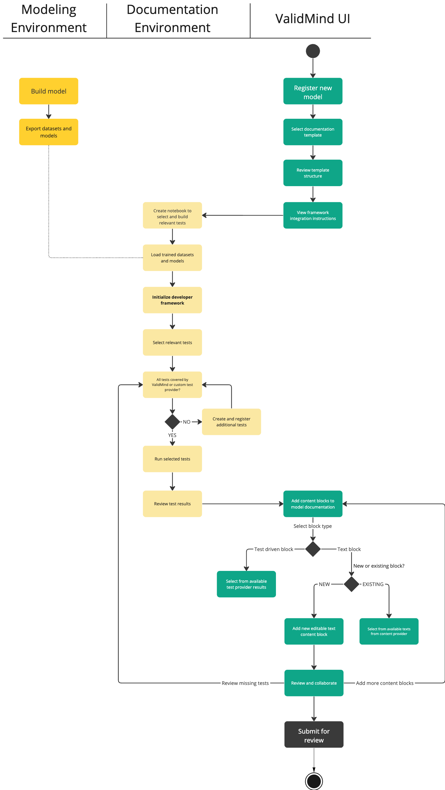

graph LR
A[1. Develop<br> model] --> B[2. Generate model<br> documentation]
B --> C[3. Refine model<br> documentation]
C --> D[4. Submit for review]
C --> B
Get started with the ValidMind Developer Framework
This section introduces the ValidMind Developer Framework and its functionalities. This topic is relevant for model developers who want to use the framework to document and test their models in production.
What is the Developer Framework?
When developing models for specific use cases, whether they’re AI-driven large language models (LLMs) or models for financial services, it’s important for model developers to meticulously document the entire development process of the selected models. Inherently, no model is perfect and each carries its own set of risks based on its design and purpose. Robust documentation and complete testing is a crucial measure to mitigate these inherent risks.
ValidMind’s Developer Framework provides a rich suite of documentation tools and test plans, from documenting descriptions of your dataset to testing your models for weak spots and overfit areas. The Developer Framework helps you automate the generation of model documentation by feeding the ValidMind platform with documentation artifacts and test results to the ValidMind platform.

ValidMind offers two primary methods for documenting model risk:
- By generating model documentation: Through automation, the framework extracts metadata from associated datasets and models for you and generates model documentation. You can also add more documentation and tests manually using the documentation editing capabilities in the ValidMind UI.
- By running pre-built validation tests: The framework provides a suite of validation tests for common financial services use cases. For cases where these tests do not cover everything you need, you can also extend existing test suites with your own proprietary tests or testing providers.
The Developer Framework is designed to be model agnostic. If your model is built in Python, ValidMind’s Python client library already provides all the standard functionality you might need without requiring your developers to rewrite any functions. For Python developers, a simple install gets you all of the functions:
pip install validmindHow do I use the framework?
The workflow for model developers takes you through four major steps:
Develop model: In your existing developer environment, build one or more candidate models that need to be validated. This step includes all the usual activities you already follow as a model developer.
Generate model documentation: Use the Developer Framework to generate automated model documentation and run validation tests. This step includes making use of the automation and testing functionality provided by the framework and uploading the output to the Platform UI. You can iteratively regenerate the documentation as you work though the next step.
Refine model documentation: In the ValidMind Platform UI, review the generated documentation and test output. Iterate over the documentation and test output to refine your model documentation. Collaborate with other developers and model validators to finalize the model documentation and get it ready for review.
Submit for review: In the ValidMind Platform UI, you submit the model documentation for review which moves the documentation workflow moves to the next phase where a model validator will review it.
Adopting the framework for your use case
Let’s explore the approach to generating and refining documentation further to understand the process of using the ValidMind Developer Framework in production better.
Before you, as a model developer, can use the Developer Framework, you should verify that the current documentation template contains all the necessary tests for the model they need. The template might already be sufficient and you only need to run the template within the Developer Framework to populate documentation. Or, more likely, the template might need additional tests that you can add these tests via the Developer Framework.
We call this process of verifying the suitability of the the current documentation template or adding more tests to the template the template building and template execution phases.
This is an iterative process:
graph LR
A[1. Build template] --> B[2. Run template]
B --> A
Build the template: When the documentation template requires more tests to be added, or if the documentation template does not include a specific content or test block you need:
Use the Developer Framework to to add the relevant tests or content blocks for the model use case.
If a test you need is not provided out of the box, add your own external test provider.
Run the template: When you have registered all the required tests as content blocks in the documentation template, populate the necessary model documentation with this call in your model:
run_template()
Please note that ValidMind may not support all potential use cases or provide a universally applicable documentation template. Typically, you initiate the process of putting ValidMind into production by constructing a template specific for your own use case and refine your the documenation project.
TO DO Create the mother of all Mermaid diagrams to replace this image embed and explain this further
The end-to-end workflow that a model developer steps through when populating a documentation template with ValidMind is as follows:
